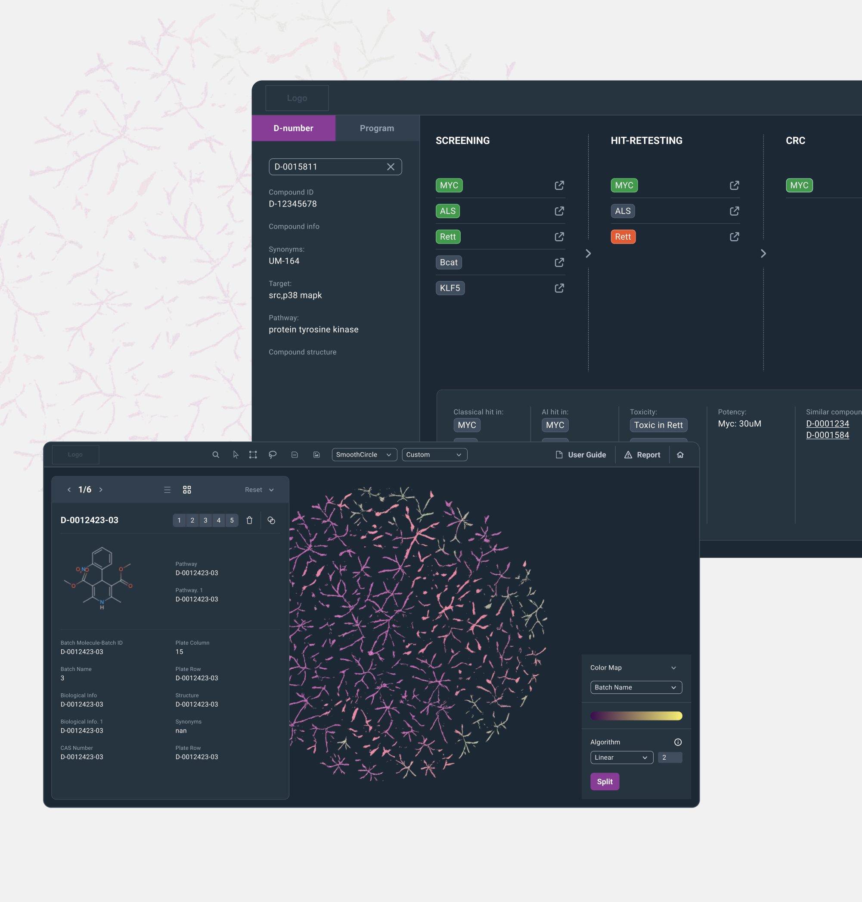

Designed and delivered a suite of dashboards and applications for a life sciences company, serving a wide range of users—from researchers and clinicians to executive stakeholders. The project began with the creation of a comprehensive design system, establishing a unified visual language across typography, color, components, and interaction patterns. This system became a scalable foundation, enabling consistency and faster development across multiple products and teams.
Grounded in user needs, the process included UX research, wireframing, prototyping, and continuous validation. Close collaboration with domain experts ensured that each solution aligned with real-world scientific and clinical workflows.
A key focus of the work was data visualization—translating complex, data-heavy outputs into intuitive, actionable interfaces. The result was a set of tools that made sophisticated scientific information more accessible, supporting better decision-making across all user groups.
